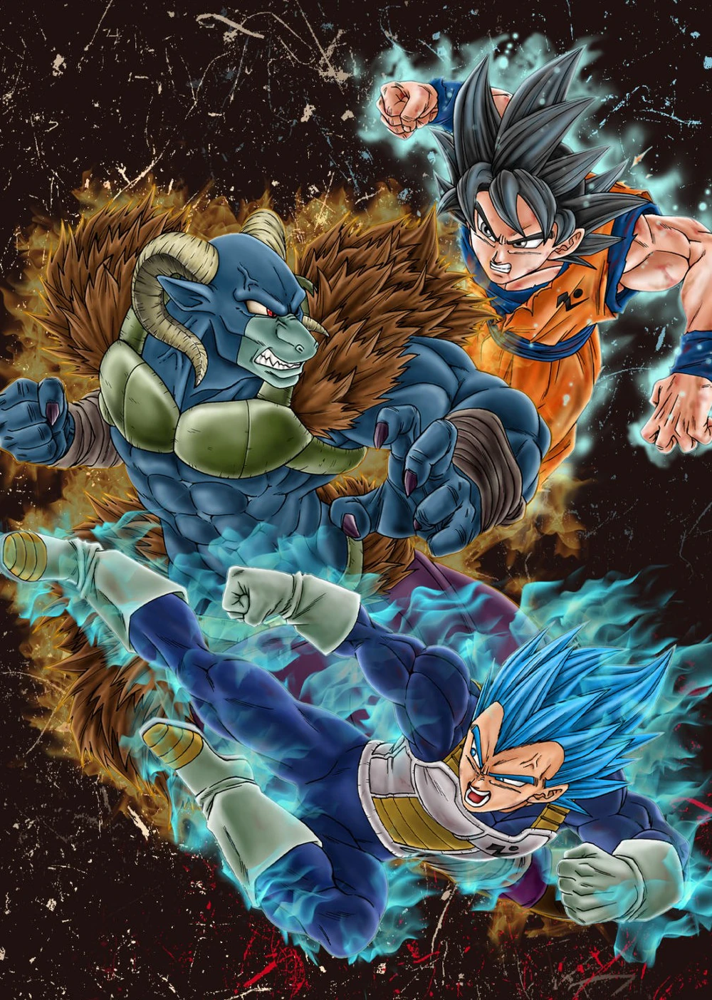
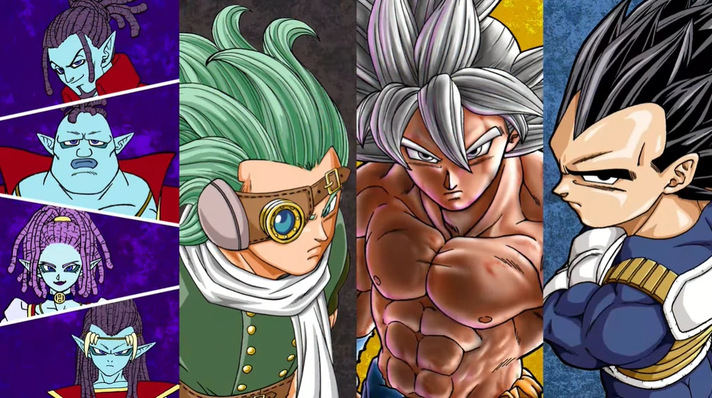

 Goku and Vegeta are asked by the Galactic Patrol to recapture the fugitive Moro, an evil magician who can siphon energy from planets. In New Namek, Moro defeats them and uses the Namekians' Dragon Balls to restore his abilities and release all criminals in the Patrol's custody. Moro and the convicts rampage across the galaxy while Goku and Vegeta train for a rematch. Goku learns to use Ultra Instinct at will, while Vegeta heads to Planet Yardrat to learn a new technique to overcome Moro's magic. Moro leads his army of criminals to Earth, and Goku's allies make a stand until Goku and Vegeta arrive. Nearing defeat, Moro fuses with the Earth, threatening to self-destruct and destroy the galaxy. After absorbing energy fused by Vegeta's new powers, Goku slays Moro, saving the Earth.
 Goku and Vegeta return to training with Whis and Beerus. Meanwhile, a Cerelian mercenary named Granola learns from his employers, the Heeters, that Frieza is alive, and vows to destroy him and avenge his home planet of Cereal. Granolah uses his planet's Dragon Balls to become the strongest warrior in the universe, at the cost of his lifespan. The Heeters manipulate Goku and Vegeta into fighting Granolah. While Goku and Vegeta grow stronger fighting Granolah, and Vegeta gains a new Ultra Ego transformation, the two are defeated by Granolah. Before he can finish them, Granolah's foster father, the Namekian Monaito, reveals that Bardock, Goku's father, had saved them during Frieza's attack on Cereal forty years prior. During the attack, the Heeters, who were behind Cereal's destruction, killed Granolah's mother Muezli. Bardock saved Monaito and Granolah, defeating the youngest Heeter Gas. In the present, the Heeters Oil, Maki and Gas arrive to finish off Granolah, Monaito, Goku and Vegeta. Gas has become the strongest warrior in the universe, through a wish made to the Cerealian Dragon. Gas easily defeats Granolah and Goku as Vegeta retrieves a Senzu bean. Vegeta feeds the bean to Granolah, who confronts Gas, and overwhelms him. Elec arrives and removes Gas' pendant that was suppressing his powers. Gas goes berserk, but regains control of himself, with Elec's help. With Granolah and Vegeta incapacitated, Goku uses Instant Transmission to lure Gas away from Cereal. Goku, Granolah, Vegeta and Monaito retreat to Monaito's house to recuperate. Monaito gives Goku Bardock's scouter, which contains an audio recording of him defeating Gas through sheer will and determination. As Monaito heals Granolah, Goku and Vegeta face off against a returning Gas. Despite their best efforts, they are defeated, though Gas' lifespan is also consumed in the fight, aging him greatly. Granolah eventually returns, and seemingly defeats him. As Monaito heals Goku, Vegeta, and Granolah, Gas, in a more powerful though decrepit state, returns and fatally injures Monaito. Granolah tends to Monaito, while Goku and Vegeta fight Gas, but are defeated. Frieza arrives on Planet Cereal, having been lured by Elec so Gas could kill him. Having spent 10 years training in a Hyperbolic Time Chamber, Frieza easily kills Gas and Elec, and reveals his new transformation, Black Frieza, easily defeating Goku and Vegeta. He hires Oil and Maki for his crew and leaves. Whis arrives and heals Monaito, retrieving Goku and Vegeta. After Whis retrieves Goku and Vegeta they go back to Beerus' world, wondering if Frieza is now the universe's strongest warrior.